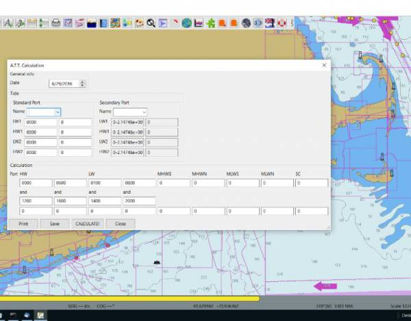
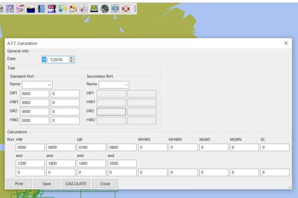

Admiralty Tides Tables
Aim
Form or repository for Admiralty Tide Table (ATT) information. Intent is simply to store it in an useful form in OpenCPN. Admiralty Tide Tables which are a useful form for manually updating current tides found.
Links
-
Source: Github Repository
-
Maintenance Source: https://github.com/rgleason/admiralty_tide_tables_pi
-
Forum: A.T.T. calculation plugin for REEDS almanac and Admiralty Tide Tables
-
Explanation: Admiralty Tide Tables Explanation
Documentation
| Please make a User Guide. More information is given in xref:opencpn-plugins:authoring:pm-plugin-documentation.adoc |
1. What and Why
Easy work with ATT, published in REEDS or in Tide Tables, i’ve created small OpenCPN plugin. It allows to calculate tides on secondary ports having data from standard ports and differences of secondary ports how it is suppose to be done manually on paper. dea is simple: I want to simplify tedious part of tide calculation based on A.T.T. → calculation itself.
Having REEDS for a given year, I do actually have most up-to-date calculation for most of ports and marinas, covered by the almanac. Problem is only the calculation.
So far I can easily type-in the data for some standard port and differences for secondary port of interest, press “calculate” and get my tide for secondary port at given date. Agreed, further work on this tide (tide at given time, time or required depth and and and) has to be done manually, but for the beginning it is already something if one has tide for secondary ports.
Input form of the plugin has a form and acronyms like it is in A.T.T or Reeds for simplicity.
For further ideas would be collecting calculated data in some offline/online data base so that one has to type in tides and differences only once… but it is not done yet.
This calculated/typed-in data could be shared via … some file in same git repository or via some online database - don’t know what is better.
If some one wants to contribute → you are welcome. If plugin gets published on opencpn page/plugins → nice. if someone wants to take over its maintenance and further development (without removing essential part → working with Reeds/A.T.T ) → great (i don’t have much time to invest into it) Feature requests/comments/improvements suggestions i will read, but do not promise to react on them immediately ( i don’t have much time to invest into it)… only if they will be useful for my own usage while sailing… sorry for that.
Update
-
Added IO.
-
Input once. Now one has to input data for standard or secondary ports only once, save it and it gets loaded by next start of opencpn automatically.
-
Format of files is not stable yet. I have to make a round of field tests weather it is usable and check calculation.
-
rgleason tests it on win as standalone build (I use linux and build within opencpn build system)
-
Any another tests (on another systems/configurations) are welcome.
Small road map:
-
Polish UX and behavior of all form elements
-
Improve io format.
-
Connect Standard and secondary ports. (issue: A.T.T. lists numbers of ports, REEDS - no.. ).
Further ideas (which i might or might not do):
-
Add some kind of exchange data of stored ports with community to make it downloadable. In this way data base of tide data from A.T.T. and REEDS will grow much faster and gets available for more people.
-
Add support for tide curve for standard port, so one can do such thing like “at which time one has enough water depth to pass a barrier” or similar.
-
…
2. Installation
Using Plugin Manager (PIM)
ATT is available as a managed plugin (PIM), which is the easiest way to install the plugin. The OpenCPN Manual has general information in Plugin Download, Install and Enable for installing this plugin. This is the preferred way.
In OpenCPN, go to the Options → Plugins and download, install and enable the ATT plugin.
-
In OpenCPN Click Tools-Options-Plugins
-
First "Update" the master plugins catalog.
-
Select the ATT entry and "Install" the plugin.
-
In the list of installed plugins "Enable" the Tactics plugin and "Apply".
-
Use “Preferences” to set your preferences (should be self-explanatory). Then “Apply.
-
After successful installation, the plugin should be available in the plugins tab of your OpenCPN options dialog box.
-
Then close Options and the Watchdog Icon should appear in the Toolbar.
Use Plugin Package Installer (PI)
The second way is to download a PI Package Installer (Windows .exe, Linux .deb or MacOS .pkg) from the OpenCPN website, to download Watchdog

